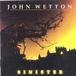

| Artist: | John Wetton |
| Title: | Sinister |
| Label: | Giant Electric Pea GEP 1029 |
| Length(s): | 40 minutes |
| Year(s) of release: | 2001 |
| Month of review: | [03/2001] |
| 2) | Say It Ain't So | 3.57 |
| 3) | No Ordinary Miracle | 4.52 |
| 4) | Where Do We Go From Here? | 3.21 |
| 6) | Another Twist Of The Knife | 4.30 |
| 8) | Before Your Eyes | 2.56 |
| 9) | Second Best | 4.00 |
| 10) | Real World | 2.41 |
Say It Ain't So is a more of a rocker opening with lyrics about people breaking up. Love and mostly the problems you might have because of it, are the subjects of many of the songs on this Asia like album. Quite a bit of groove in the percussive piano playing, but aspects of this song simply sound a bit too obvious and familiar.
No Ordinary Miracle is a more balladic piece, a bit anthemic and it has that "we against all odds" quality. The style of Wetton on these songs is not very different, mostly in the style of his more recent studio albums. However, it does seem that notwithstanding the fact that there's nothing really new to be heard here, the song seem alright to me, and this has been different (when I heard his previous studio albums). As most of you already know, you should not buy a Wetton album thinking you'll hear Crimsonesque stuff (but wait for later).
Where Do We Go From Here? has some nicely melodic vocal parts for the verses, but the chorus is a bit too easy for me again, although Wetton tends to put a twist in the melody here and there to make it all a bit more interesting.
Time for a change then with E-Scape on which we hear the soothing flute of Ian McDonald and the soundscapes of Robert Fripps guitar. Sonorous meanderings to good effect. A bit Gandalfian.
Another Twist Of The Knify has a good drive with typically American harmony vocals in the bridge. The guitar solo is a good one as well, making this one of the better and also more distinctive songs on the album.
Silently is a romantic ballad with the soothing backing of Beate. In parts I am reminded of Bryan Adams, but in his better, not so recent days. A mellow accessible track on which Orford is doing some backing as well. It seemed to me that this track is more "English" than "American" sounding. Less AOR, more melodic rock.
Before You Eyes features John Young and is even a quieter track than the one before it. Some flute on this one as well.
Second Best continues the evident line of the album, while closer Real World is a little ditty with harmonica. Not the greatest of tracks.